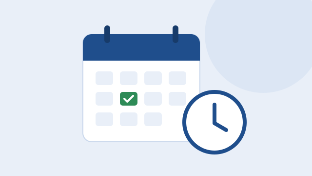
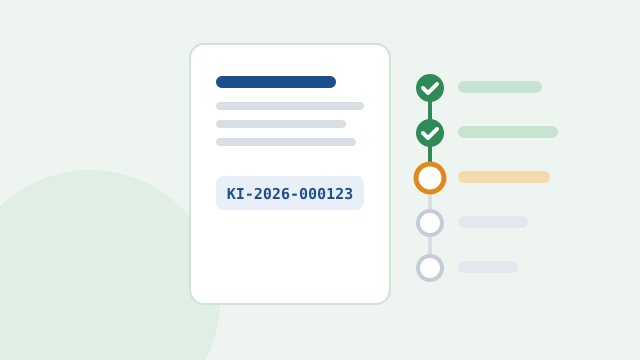
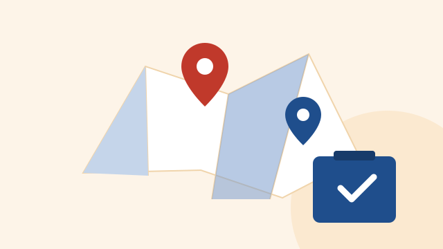

Para shërbimit
Termini
Rezervo online, shih listën e dokumenteve që duhen sjellë dhe ndiq radhën live në sportel.
Rezervo termininRezervo terminin pa pritur në radhë, ndiq kërkesën tënde hap pas hapi dhe vendos vetë si shpenzohet një pjesë e buxhetit të lagjes.
Sot qytetari pret orë të tëra në sportel dhe shpesh mëson aty se i mungon një dokument. Pasi e dorëzon, kërkesa humbet në procedurë. Dhe në dëgjimet buxhetore marrin pjesë pak njerëz. Komuna Ime i lidh këto tri momente.

Rezervo online, shih listën e dokumenteve që duhen sjellë dhe ndiq radhën live në sportel.
Rezervo terminin
Çdo kërkesë merr kod gjurmimi. Shih në cilën drejtori ndodhet dhe sa ditë kanë mbetur nga afati ligjor.
Gjurmo lëndën
Kupto buxhetin e komunës, propozo projekte për lagjen dhe voto me një buxhet virtual.
Shiko buxhetinKI-2026-000123.Çdo kërkesë e dorëzuar merr një kod unik. Me të e gjen lëndën pa u kyçur dhe sheh çdo hap të procedurës, me datë dhe orë.
Kodi ka vitin dhe një numër rendor me gjashtë shifra, prandaj e shkruan lehtë edhe në telefon.
{
"kodi_gjurmimit": "KI-2026-000123",
"lloji": "Leje ndërtimi – kategoria I",
"drejtoria": "Drejtoria e Urbanizmit",
"statusi": "ne_shqyrtim",
"afati": "2026-12-14"
}